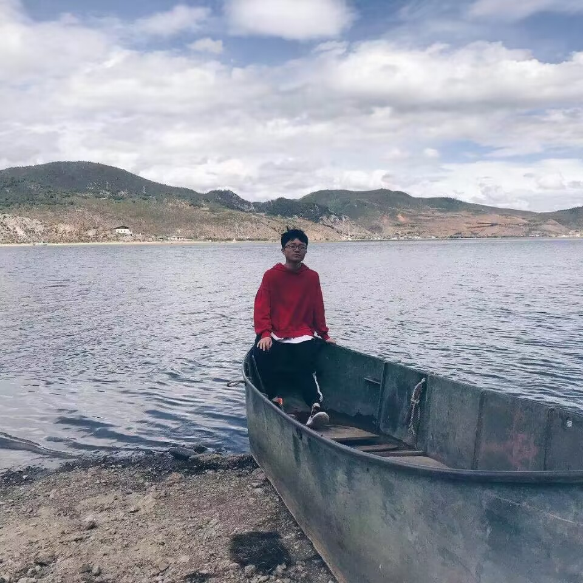
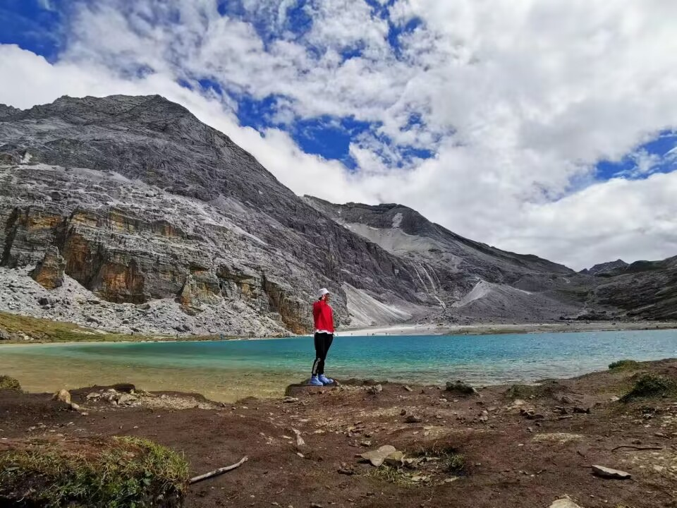
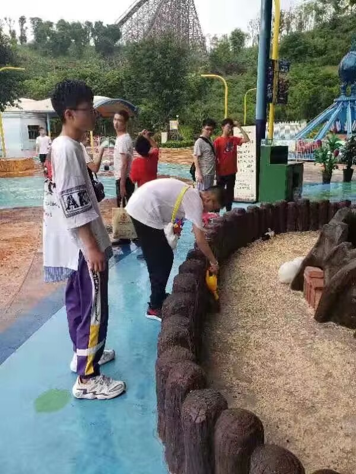
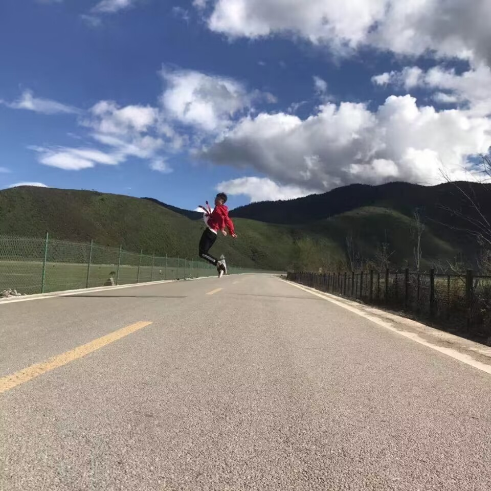

稻城
稻城高原，天地之间
云雾缭绕，风景绝佳
登高远望，群山连绵
草原如海，牛羊成群
清澈溪流，鱼儿嬉戏
藏族风情，独具魅力
美食佳肴，让人回味
登顶稻城，俯瞰群山
感受大自然，心灵得安。
旅游过程，如诗如画，
留下美好，永不褪色。
在稻城之游，我仿佛置身于一幅神秘的画卷中。高耸入云的雪山，清澈见底的湖泊，茂密的森林和草原，构成了一幅壮美而又神秘的自然画卷
在这里，我感受到了大自然的力量和美丽，也感受到了自己微不足道的渺小。但是，正是这种渺小，让我更加珍惜眼前的一切，让我更加热爱生命和自然。
浪漫的国度
稻城，一个神秘而浪漫的地方，它的美丽让人陶醉，让人流连忘返。在这里，你可以看到雪山巍峨，草原绵延，溪水潺潺，鸟语花香，一切都是那么的自然而又美丽。
稻城的浪漫，不仅仅是因为它的美丽，更是因为它的神秘。在这里，你可以看到藏族的文化，你可以品尝到藏族的美食，你可以了解到藏族的历史和传统。
在这里，你可以感受到大自然的魅力，让你的心灵得到净化，让你的心旷神怡。
在这里，你可以看到牛羊在草原上自由自在地奔跑，你可以听到溪水潺潺的声音，你可以看到天空湛蓝，云朵白。
稻城的浪漫，让人感受到了生命的美好，让人感受到了大自然的力量，让人感受到了人与自然的和谐。
旅游小记
或许是因为知道自己受欢迎
傍晚的夕阳总是跑得飞快
云彩瞬息万变
让捕捉的人都忘了自己会呼吸
当路灯“啪”地亮起
像蜡烛燃烧的小小声音
被落日凝固住的人们才开始复活
稻城高耸入云天，
山水相依如画卷。
雪山巍峨翠峦起，
草原绵延绿意浓。
风吹草低牛羊啸，
溪水潺潺鸟语鸣。
天空湛蓝云朵白，
浪漫情怀荡漾情。



